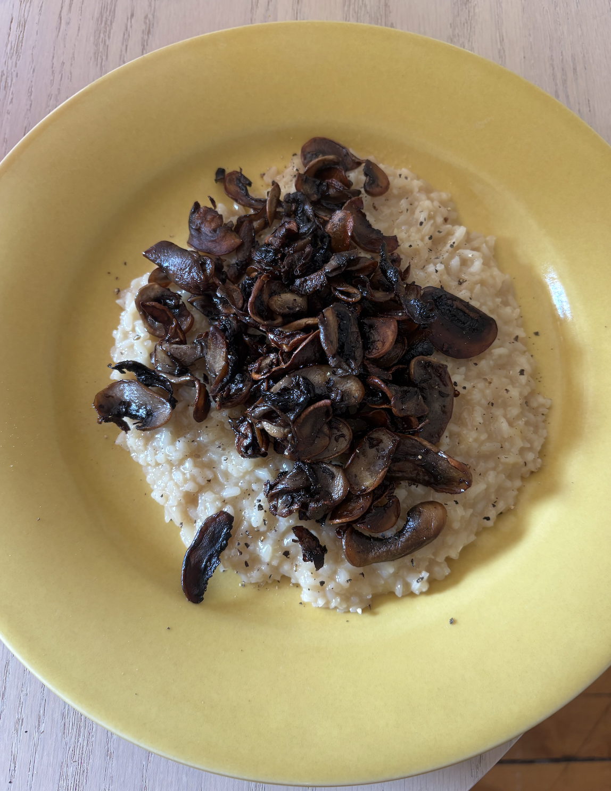
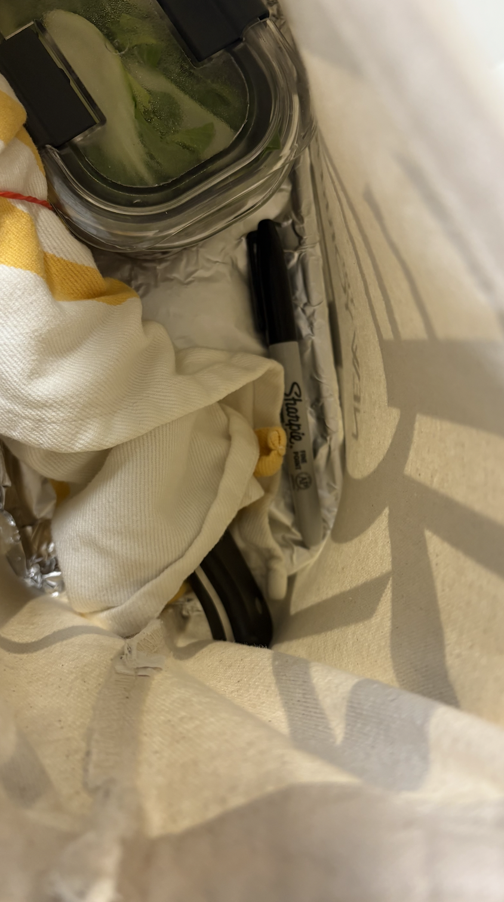

Staging at a restaurant as a PhD student
Cooking has been my main hobby throughout graduate school due to how practical and economical it is. But aside from these reasons, the biggest draw to cooking for me has always been the experience of performing physical tasks with my own hands and being able to arrive at a finished product in a relatively short time. As a graduate student in biostatistics, I find that much of my daily work takes place in my head and can feel disconnected from the physical world. The work itself can feel uncertain and unresolved, without clear steps to take. This is not necessarily a flaw of doing research, as the dual of this opacity is having near complete intellectual freedom, but it can at times be overwhelming. Cooking has always provided me with a respite from such feelings because recipes are self-contained and have discrete steps outlined.
I have been cooking relatively intensely at home since I moved out of university housing in undergrad and needed a way to feed myself. However, the experience gained from home cooking is pretty limited as many technical skills are only improved through repetition, and it just doesn’t make sense for me to julienne 20 carrots for one meal. For this reason, I wanted to experience working in a restaurant kitchen by doing a stage. The word stage comes from the French noun stagiaire, which is a trainee or apprentice. In the culinary world, a stage is when candidates interested in a particular kitchen will work there for free for a short period of time in hopes of gaining a permanent position or just to learn the techniques employed there.

I have dined several times at a local upscale seafood restaurant over the past few years and was impressed with the quality of the ingredients and the consistency of the food each time. On a whim, I sent an email to the owner of the restaurant and asked if I could come in for a stage and surprisingly got a positive response. I was asked to come in at 3pm on a Saturday to help with dinner service and the prep preceding it.
When I showed up with my non-slip kitchen clogs (purchased just for this occasion) and my chef’s knife wrapped in a towel, I expected to be relegated to chopping stock vegetables in some back corner. I had read everything I could find on the internet about stages and knew that it was unlikely for me to touch any food that would be directly served to customers. However, I was immediately thrown into chopping vegetables for salad and at 5pm when the restaurant opened for dinner service, I was shown how to prepare appetizers like ceviche, escargot, and octopus. After one demonstration of each dish, I was expected to assist the other chefs with these dishes. As service ramped up, I was amazed by the efficiency and collaborative environment of the kitchen. It was a stressful situation because of the volume of orders but the employees were committed to completing their dishes with integrity as no level of detail was sacrificed at any point. The executive chef himself was cranking out orders along with the staff, fist bumping his employees for a job well done, and intermittently serving me samples of menu items. I was impressed by the lack of hierarchy and how large of a role teamwork played in making things run smoothly. For example, the employees were able to anticipate each others needs without verbal communication. If an order for octopus was placed, the employee responsible for plating the octopus would be preparing their station to do so, but someone else who was closer to the tools would be passing them what they need. This wasn’t something anyone had to ask for, it was just baked into the dynamics of the kitchen. This level of chemistry was achieved by not only considering what you need to do your own job well, but actively thinking about what others are doing and how you can make their lives easier too.
I was enthralled by this experience and invited back for a second shift by the executive chef. This time, I came in on a weeknight and was able to learn a lot more as things were slower. I was shown how they make their homemade ricotta and chatted with the executive chef about how he was able to build such an efficient team. At the end of the night, the chef asked me to pick some dishes off of the menu that he and his employees then cooked for me. I was sent home with crab cakes, swordfish, ceviche, crab soup, and calamari, not to mention various desserts and a whole quart of their homemade ice cream. This act of generosity stuck with me for days as they had welcomed me into their kitchen despite my lack of culinary experience, trained me kindly and patiently even though I kept getting in the way and caused lots of trouble, and yet they felt I deserved to get something tangible out of it on top of all the time and effort they had already given me.

Being a stage in the kitchen was terrifying to me because I was putting myself in a situation where I would be starting from scratch and would be objectively bad at many of the required skills. Feeling inadequate and incompetent for 8 hours at a time is not an enjoyable experience, but it is an indicator that you are learning a great deal. It was also a good exercise in humility for us perfectionists as you learn that you can’t be good at everything, which is a valuable reminder in both research and real life. The life of a PhD student or any academic can sometimes feel lonely and peeking into a completely different industry was a reminder that leaning on others, and more importantly, allowing others to lean on you is what makes a team productive.